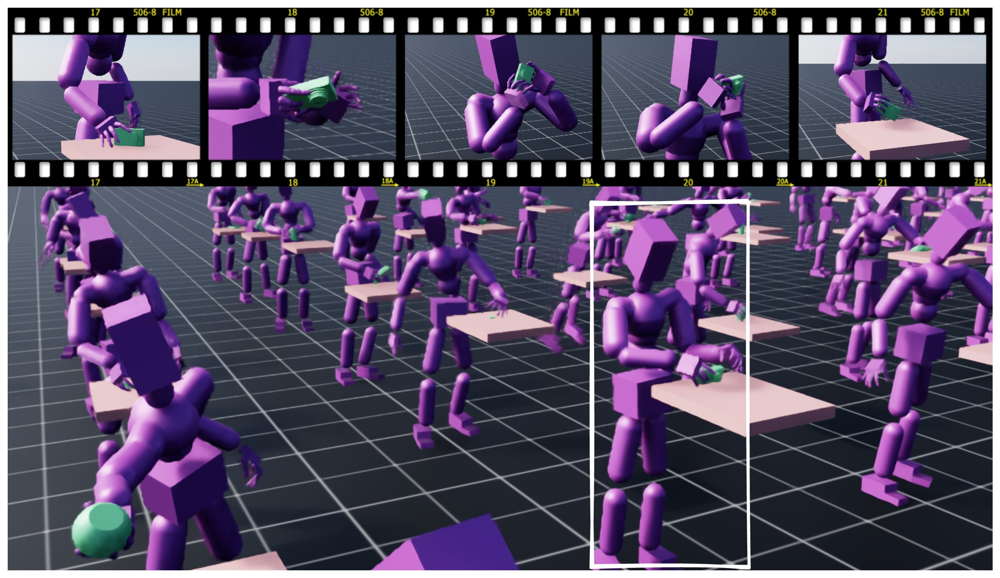

@inproceedings{tessler2025maskedmanipulator,
author = {Tessler, Chen and Jiang, Yifeng and Coumans, Erwin and Luo, Zhengyi and Chechik, Gal and Peng, Xue Bin},
title = {MaskedManipulator: Versatile Whole-Body Manipulation},
year = {2025},
booktitle={ACM SIGGRAPH Asia 2025 Conference Proceedings}
}